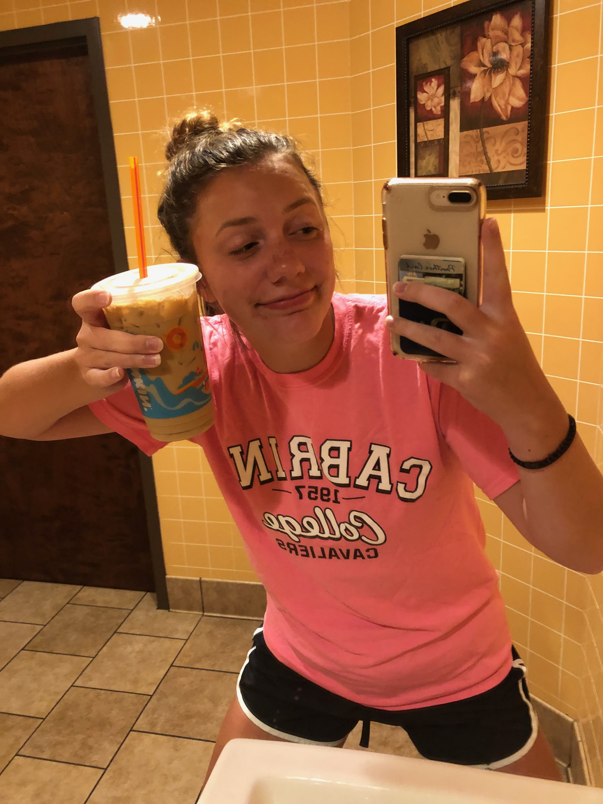

Interests
This page is all about things I like, or more specifically things that make me happy. Hopefully reading these gives you a glimpse into who I am as a person.
Things that make me happy:
- Cats! I have two cats at home and I adore them. The kitten in the picture below is my cat Loki. Cats are the cutest/funniest little things in the world

- Family and Friends! This one might seem obvious but I really value quality time spent with loved ones
- Coffee! I love the taste and all the lovely effects coffee has on me

- The Christmas Season! I LOVE Christmas time-- the decorations, the music, the cozy nights by the fire and the tree-- all of it!
- The Beach! My family has a place in Cape May, NJ, which is my happiest place in the world. I love spending time there
- Music! I love listening to most genres of music. Music helps me to clear my mind and brings me a lot of joy
I also really enjoy being in school and the clubs I am involved in here at Pitt. You can go to my experience page to read more about those!